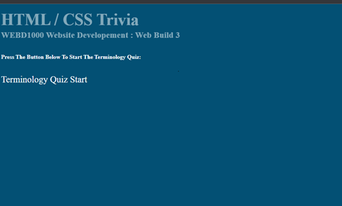
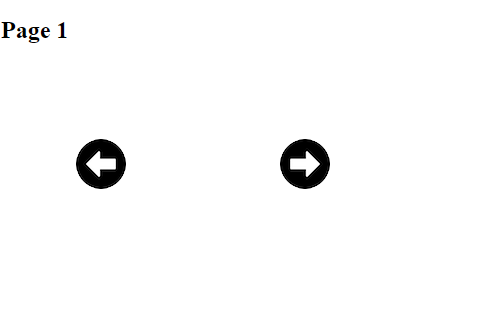
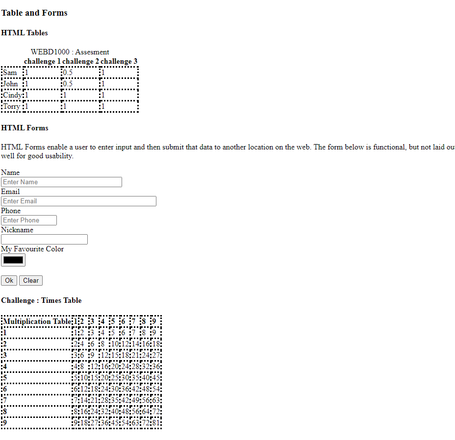
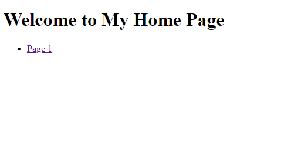
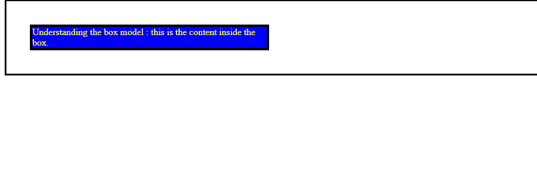
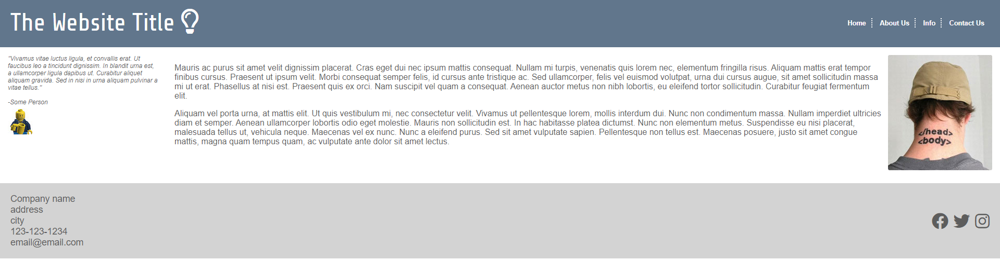

Title: HTML/CSS Trivia
This website is an HTML/CSS trivia website made for my WEBD1000 Course
Tech Used: Windows laptop and VScode

Title: Using Links As Images
This website is an example of how to turn images into links using HTML.
Tech Used: Windows laptop and VScode

Title: Using Tables And Forms In HTML
This website is a demonstartion of how to use tables and forms on an html document without using CSS.
Tech Used: Windows laptop and VScode

Title: Using Regular links and Turning Words To Links
This website demonstrates how to use links in html and turn words in your text to links.
Tech Used: Windows laptop and VScode

Title: CSS Box Model
This website demonstrates the CSS box model.
Tech Used: Windows laptop and VScode

Title: Page Layout
This website shows what a well designed page layout looks like.
Tech Used: Windows laptop and VScode
